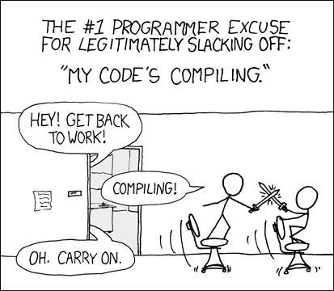
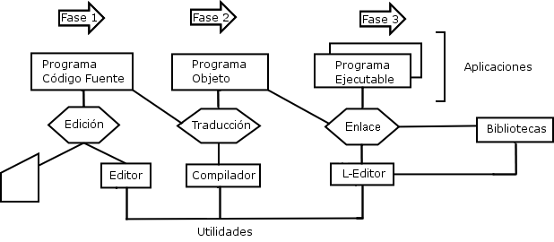
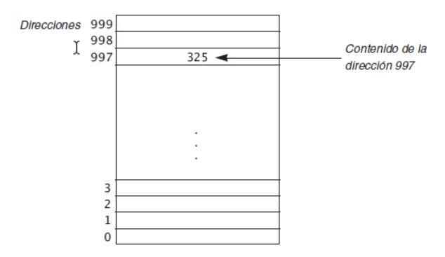
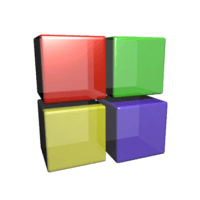

Programación en Lenguaje C/C++
Conceptos básicos
Created by edme88
Qué es un programa?
Cómo lo definirian con sus palabras?
Programa: Definición
Conjunto de instrucciones que sigue la computadora para alcanzar un resultado específico.
El programa se escribe en un lenguaje de programación a partir de un diagrama de flujo diseñado con anterioridad.
Tanto el lenguaje de programación como la computadora son los medios para obtener un fin: conseguir que el algoritmo se ejecute y se efectúe el proceso correspondiente.
Qué es un lenguaje de programación?
Cómo lo definirian con sus palabras?
Lenguaje de Programación: Definición
Lenguaje que pueden ser entendido y procesado por una computadora.
Conjunto de reglas sintácticas (especifica la formación de instrucciones válidas) y semánticas (especifica el significado de estas instrucciones), que hacen posible escribir un programa.
Lenguaje de Programación: Tipos
- Clasificación según tipo de problema que son capaces de resolver:
- Programación estructurada: Pascal, C, Basic, Fortran, Cobol
- Programación orientada a objetos: C++, Smalltalk, Java
- Programación Simbólica: Lisp
- Programación Lógica: Prolog
Programación Estructurada
- Emplea un conjunto restringido de estructuras de control en cada nivel, instrucciones secuenciales, estructuras selectivas y estructuras repetitivas.
- Cuando hay que resolver un problema de tipo algorítmico (que tienen una solución determinística), primero hay que desarrollar el algoritmo, que proporciona una solución muy general
- Ejemplo: Pascal, C, Basic, Fortran, Cobol
Programación Orientada a Objetos
- Los programas se estructuran en base a un conjunto de objetos que interactúan entre si para obtener el comportamiento deseado del sistema.
- Ejemplo: C++, Smalltalk, Java
Programación Simbólica
- Búsqueda heurística
- Base de conocimientos estructurada en una memoria global de trabajo
- Orientada hacia el procesamiento simbólico
- Procesamiento muy interactivo
- Se usa en inteligencia artificial
- Ejemplo: Lisp
Programación Lógica
- basado en la definición de relaciones lógicas.
- Ejemplo: Prolog
Lenguaje de Programación: Tipos II
- Lenguaje Máquina
- Lenguaje de bajo nivel (ensamblador)
- Lenguajes de alto nivel
Lenguaje Máquina
Sus instrucciones son cadenas binarias (series de caracteres -dígitos- 0 y 1) que especifican una operación, y las posiciones (dirección) de memoria implicadas en la operación
Ejemplo de una instrucción: 1110 0010 0010 0001 0000 0000 0010 0000
Lenguaje de Bajo Nivel
sus instrucciones ejercen un control directo sobre el hardware y están condicionados por la estructura física de las computadoras que lo soportan.
Ejemplo de lenguaje assembler: MOV AL, 61h
Lenguaje de Alto Nivel
Sus instrucciones son fácilmente comprendida por los programadores, y no dependen del diseno del hardware o de la computadora que soportan.
Algunos lenguajes: C, C++, Java, Python, VisualBasic, C#, JavaScript
Proceso de Edición
Durante la fase de edición, el programador debe convertir el algoritmo que haya diseñado en instrucciones escritas en un lenguaje de programación específico. Para ello, se debe hacer uso de un editor de textos, con el cual se obtendrá el llamado código fuente del programa.
Código Fuente
Conjunto de líneas de texto escritas por un programador en algún lenguaje de programación con los pasos que debe seguir la computadora para ejecutar un programa.
Proceso de Compilación
El compilador traducirá el código fuente a código máquina, también llamado código objeto, siempre y cuando, el propio compilador no detecte ningún error en dicho código fuente.
Código Objeto
Código que resulta de la compilación del código fuente. Puede ser en lenguaje máquina o bytecode, y puede distribuirse en varios archivos que corresponden a cada código fuente compilado.

Proceso de Enlace
La fase de enlace sirve para unir el código objeto de varios subprogramas por medio de un enlazador. Cuando se desarrolla un programa, estos pueden utilizar subprogramas y, de cada uno de ellos, su código objeto debe ser enlazado (unido) al código objeto del programa que los utilice. Esto se realiza mediante un programa llamado enlazador, montador o linkador en la fase de enlace.
Programa Ejecutable
Archivo binario, cuyo contenido se interpreta por la computadora como un programa.

Tipo de Datos
Los datos a procesar por una computadora pueden clasificarse en:
- Simples o escalares: enteros, reales, caracteres, booleanos
- Estructurados: arreglos, cadenas de caracteres, registros y conjuntos
Datos Numéricos
- Enteros: Números que pueden estar precedidos del signo + o y que no tienen parte decimal.
Ej. 128 -743 16225 -16780 - Reales: números que pueden estar precedidos del signo + o y que tienen una parte decimal.
Ej. 7.5 -37.865 129.7 -15.0
Datos Alfanuméricos
- Caracter (simple): pueden ser letras del abecedario (a,b,c,...,z), dígitos (0, 1, 2 ..... 9) o
símbolos especiales (#, $, * ,* , %, /,..., etc.)
Los números no se pueden emplear para operaciones aritméticas.
Se debe escribir con apóstrofe: 'a' 'B' '3' '#' - Cadena de Caracteres (estructurado): Conjunto de catacteres.
Se escribe con comillas "abcd" "9#hj&" "Juan Perez" "756-678"
Identificadores
Nombre que se les da a las casillas o celdas de memoria donde se almacenan los datos a procesar por la computadora.
Identificadores
Reglas para los nombres de los identificadores:
- El primer caracter debe ser una letra (a, b, c, z).
- Los demás caracteres pueden ser letras (a,b,c,...,z), dígitos (0,1,2,...,9) o el símbolo especial: _
- No puede contener palabras reservadas.
- Debe ser representativo.
- Muchos lenguajes distinguen mayúsculas de minúsculas
- Recomendación: snake_case ó camelCase ó notación húngara (Ej. bActivado)
Palabras Reservadas
| auto break case char const continue default |
do double else enum extern float for |
goto if int long register return short |
signed sizeof static struct switch typedef union |
unsigned void volatile while |
Variables y Constantes
Son direcciones de memoria con un valor, ya sea un número, una letra, o valor nulo.
Estos elementos permiten almacenar temporalmente datos en la computadora para luego poder realizar cálculos y operaciones con los mismos.
Al almacenarlos en memoria, podemos nombrarlos en cualquier parte de nuestro programa y obtener el valor del dato almacenado.
Representación de la Memoria RAM
Variables
Son elementos de almacenamiento de datos.
Representan una dirección de memoria en donde se almacena un dato, que puede variar en el desarrollo del programa.
Una variable es un grupo de bytes asociado a un nombre o identificador, y a través de dicho nombre se puede usar o modificar el contenido de los bytes asociados a esa variable.
Variables
En una variable se puede almacenar distintos tipos de datos. Se debe elegir el tipo de dato que mejor se adapte al valor que debe contener.
De acuerdo al tipo de dato, será la cantidad de bytes que ocupa dicha variable en la memoria.
Variables
| Tipo | Tamaño en memoria | Valores posibles | Descripción |
|---|---|---|---|
| char | 1 byte | -128 a 127 o 0 a 255 | Guarda caracteres del codigo ASCII |
| int | 2 or 4 bytes | -32,768 a 32,767 o -2,147,483,648 a 2,147,483,647 | Guarda numeros enteros, |
| float | 4 bytes | 1.2E-38 a 3.4E+38 | Guarda numeros decimales con precisión de 6 digitos decimales |
| short | 2 bytes | -32,768 a 32,767 | Guarda numeros enteros con menor capacidad de almacenamiento(y rango) que int |
| double | 8 bytes | 2.3E-308 a 1.7E+308 | Igual que Float pero con mayor precisión (hasta 15 digitos decimales) y mayor rango |
| long | 4 bytes | -2,147,483,648 a 2,147,483,647 | Guarda numeros enteros con mayor capacidad de almacenamiento que int |
| long double | 10 bytes | 3.4E-4932 to 1.1E+4932 | Mucho mayor precisión en calculo decimal, incluso mayor que double (hasta 19 digitos decimales) |
| boolean | 1 byte | true(>0) o false(0) | Valor lógico verdadero o falso. |
Variables: Ejemplo
#include <stdio.h>
int main()
{
int integerType;
float floatType;
double doubleType;
char charType;
long longType;
// Sizeof operator is used to evaluate the size of a variable
printf("Size of int: %ld bytes\n",sizeof(integerType));
printf("Size of float: %ld bytes\n",sizeof(floatType));
printf("Size of double: %ld bytes\n",sizeof(doubleType));
printf("Size of char: %ld byte\n",sizeof(charType));
printf("Size of long: %ld byte\n",sizeof(longType));
return 0;
}
Variables
Una vez que una variable se declara, puede recibir un valor a través de un bloque de asignación.
La asignación es una operación destructiva: cuando a una variable se le asigna un nuevo valor, se pierde el anterior.
variable = expresión o valor;Variables
void main (void){
int va1, va2; //Creación sin asignación
float re1;
float re2 = 12.4; //Creación y asignación
va1 = 10; //Asignación post-creación
va2 = va1+5;
}Constantes
Elementos de almacenamiento de datos.
Representan una dirección de memoria en donde se almacena un dato pero que no varía durante la ejecución del programa.
Constantes
Las constantes pueden ser de cualquier tipo: entero, real, caracter, etc.
Se puede definir de 2 formas:
const float PI=3.14;
const int edad=24;
#define PI 3.14;
#define edad 24;Constantes enum
enum{va0, va1, va2, va3} //define 4 constantes enteras
/*Es lo mismo que realizar esto*/
const int va0=0;
const int va1=1;
const int va2=2;
const int va3=3;Operadores
Son símbolos especiales que sirven para ejecutar una determinada operación, devolviendo el resultado de la misma.
Existen diferentes tipos de operadores:
- de Asignación
- Aritméticos
- Unitarios
- Condicionales
- Relacionales
- Lógicos
Operador de Asignación
Se utiliza para asignar un valor a una variable o a una constante.
El signo que representa la asignación es el = y este operador indica que el valor a la derecha del = será asignado a lo que está a la izquierda del mismo.
Ejemplo: int edad=20;
Operador Aritmético
Son operadores binarios (requieren siempre dos operandos) que realizan las operaciones aritméticas habituales entre números, constantes o variables.
| Operador | Significado |
|---|---|
| + | Suma |
| - | Resta |
| * | Producto |
| / | División |
| % | Resto de División entera |
Operador Aritmético Simplificado
| Operador | Forma Simplificada | Ejemplo | Equivalencia |
|---|---|---|---|
| + | += | X += 5; | X = X + 5; |
| - | -= | X -= 3; | X = X - 3; |
| * | *= | X *= 4; | X = X * 4; |
| / | /= | X /= 2; | X = X / 2; |
| % | %= | X %= 2; | X = X % 2; |
Operadores Unitarios
Llevan a cabo diversas operaciones, tales como incrementar/decrementar un valor de a uno, negar una expresión, o invertir el valor de un booleano.
Los operadores unitarios requieren sólo un operando.
| Operador | Descripción |
|---|---|
| ++ | Operador de incremento; incrementa un valor de a 1 |
| -- | Operador de decremento; Reduce un valor de a 1 |
| ! | Operador de complemento lógico; invierte el valor de un valor booleano. |
Operadores Condicionales o Relacionales
Sirven para realizar comparaciones de igualdad, desigualdad y relación de menor o mayor.
| Operador | Descripción |
|---|---|
| == | Igual a |
| != | No igual a |
| > | Mayor que |
| >= | Mayor o igual que |
| < | Menor que |
| <= | Menor o igual que |
Operadores Lógicos
| Expresión | Nombre Operador | Operador | Resultado |
|---|---|---|---|
| !a | NOT | ! | true: si a es falso. false: si a es verdadero |
| a && b | AND | && | true: si a y b son verdaderos. false: si a es falso, o si b es falso, o si a y b son falsos |
| a || b | OR | || | true: si a es verdadero, o si b es verdadero, o si a y b son verdaderos. false: si a y b son falsos |
Jerarquía de Operadores
Si tenemos en una expresión más de un operador, debemos aplicar primero el operador de mayor jerarquía, resolver esa operación, y así sucesivamente.
Jerarquía de Operadores
- Paréntesis () //Operador asociativo
- !, ++, --
- * , / y %
- +, -
- ==, !=, <, >, <= >=
- && , ||
- +=, -=, *=, /=, %=
Reglas Jerarquía de Operadores
- Si una expresión contiene subexpresiones entre paréntesis, éstas se evalúan primero; respetando claro está la jerarquía de los operadores aritméticos en esta subexpresión. Si las subexpresiones se encuentran anidadas por paréntesis, primero se evalúan las subexpresiones que se encuentran en el último nivel de anidamiento.
- Los operadores aritméticos se aplican teniendo en cuenta la jerarquía y de izquierda a derecha.
Soft:
¿Dudas, Preguntas, Comentarios?